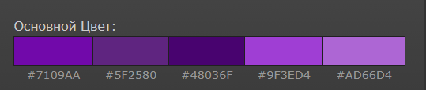

Рис. 1 — цветовой круг проекта
Сайт использует контрастные светлую и тёмную темы. Ниже приведены четыре иллюстрации, отражающие выбранные цвета и варианты оформления.
Рис. 1 — цветовой круг проекта

Рис. 2 — пример светлой темы

Рис. 3 — пример тёмной темы (главная)

Рис. 4 — Список цветов